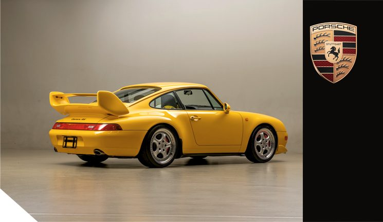
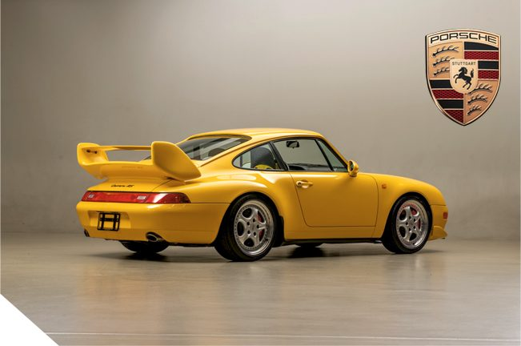
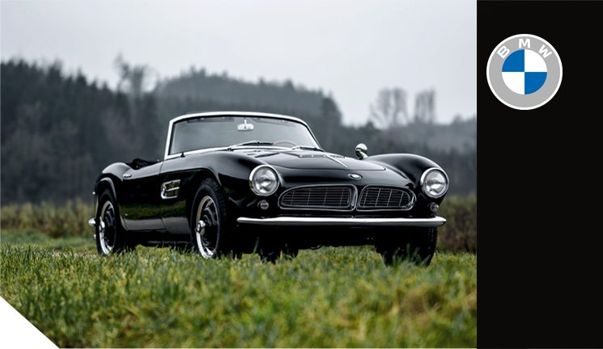
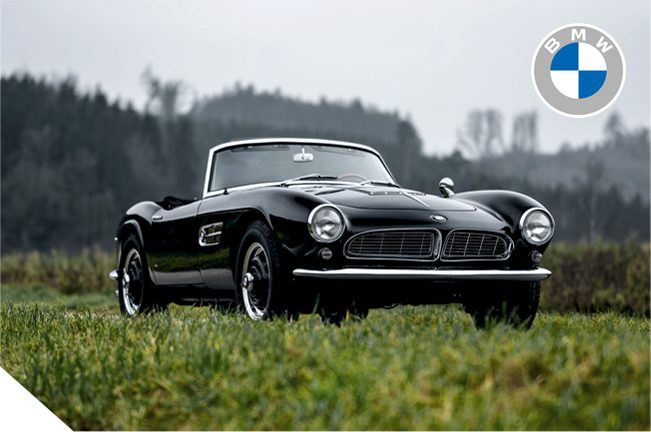
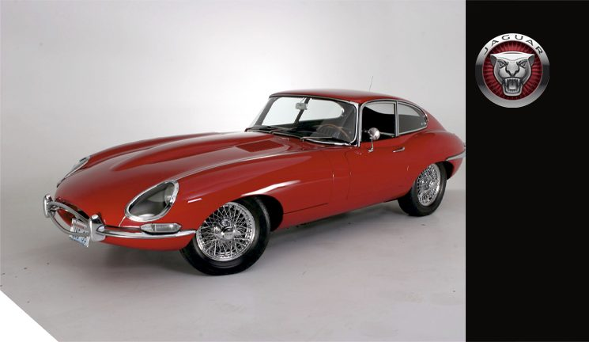
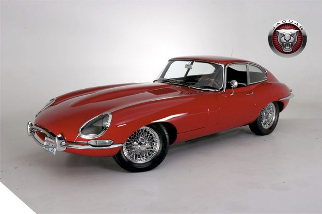
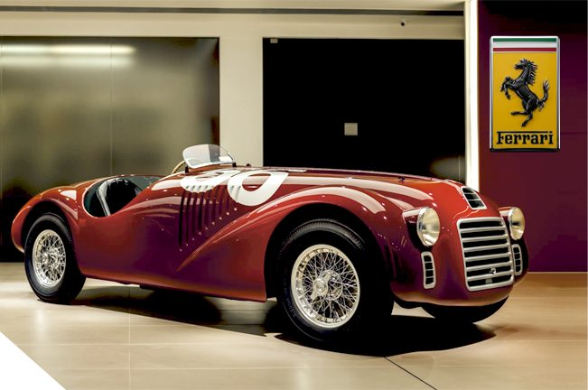
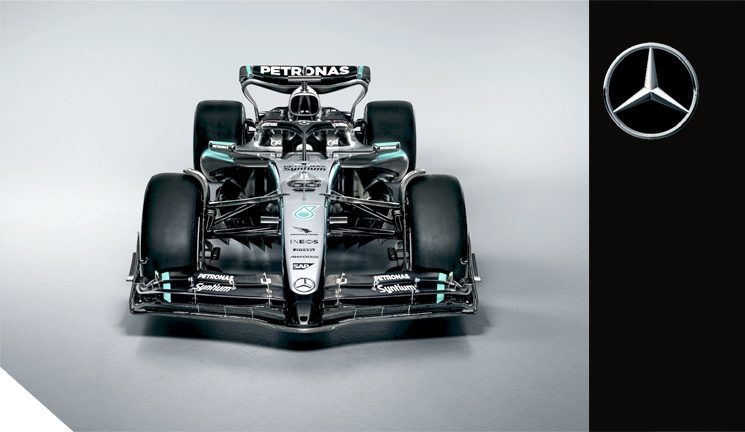
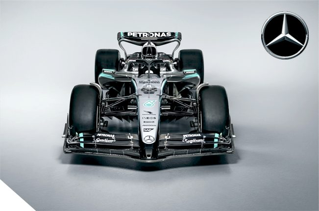
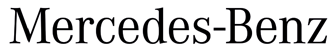

Марки авто


Porsche является одним из самых престижных автомобильных брендов в мире со штаб-квартирой в Штутгарте, Германия. Основанная в 1931 году Фердинандом Порше, компания наиболее известна своим культовым 911, который развивался на протяжении семи поколений с момента первой продажи в 1964 году. Porsche имеет великую спортивную историю, включая победы на Targa Florio и рекордные 16 побед в 24 часах Ле-Мана. Первым серийным автомобилем Porsche стала модель 356, первые экземпляры которой были произведены на лесопилке в послевоенной Австрии, в Гмюнде. Первый автомобиль увидел свет в 1948 году. Это был генезис одного из величайших имен в автомобилестроении; он стал вечным чертежом, исторической базой для каждого последующего поколения, отправной точкой для каждой новой модели Porsche. На смену 356-й в 1964 году пришла модель 911, которая стала настоящей иконой для всего автомобильного мира, окружив себя неувядаемой славой великолепного спорткара, который продолжает побеждать и сегодня. Porsche — обладатель большого количества различных рекордов, в том числе на самой знаменитой трассе в мире. Самым быстрым автомобилем на сегодняшний день на Нюрбургринге является гибридный спорт-прототип Porsche 919 Hybrid Evo, который под управлением пилота Тимо Бернхарда прошёл 20,8-километровую трассу за 5 минут и 19,546 секунды со средней скоростью 234 км/ч.
Узнать больше интересногоо компании PORSCHE



BMW является одним из старейших и самых престижных автомобильных брендов в мире со штаб-квартирой в Мюнхене, Германия. BMW — автомобиль мечты. Невероятная история поистине легендарной марки берет свое начало 100 лет назад, в далеком 1916 году. 7 марта 1916 года появилось акционерное общество Bayerische Flugzeug-Werke (BFW) — именно эта дата и считается днем рождения BMW. В июле 1917 года завод регистрирует название уже в привычном для всех виде — Bayerische Motoren Werke (BMW). История компании - это история успеха, который прошел сквозь тернии к звездам. Свой путь BMW начала как производитель авиационных двигателей, но уже в 1923 году выпустила свой первый мотоцикл, а в 1928 году компания приобретает новые заводы в городе Айзенах и лицензию на производство малолитражек Dixi. Первый автомобиль собственной разработки появляется в 33 году уже с 6-цилиндровым двигателем и знаменитой решеткой радиатора. И рядные шестерки, прославившие марку, и любимые ноздри, BMW пронесла через десятилетия; например, B58 и S58 сегодня являются одними из лучших двигателей в мире, покоривших сердца миллионнов. За 100 лет после рождения в BMW выпустили столько легендарных автомобилей и двигателей, одержали столько побед в автоспорте, что этого хватит для написания нескольких десятков толстых книг в плотных переплетах...
Узнать больше интересногоо компании BMW


JAGUAR - безусловно одна из тех легендарных марок, чье имя с замиранием сердца повторяют мальчишки, видя проезжающего по улице красавца из 90-х, будь то приготовившийся к прыжку XJ или роскошное купе XJS, а уникальный и совершенно неповторимый XJ 220 готов свести сума своей красотой любого «петролхеда»... Да, Ягуар - это марка из тех, которые и по сей день обладают ярко выраженной харизмой, уникальным стилем, характером, индивидуальностью, подчеркивающей имидж человека за рулем. А началось все в 20-х годах прошлого столетия с красивых алюминиевых мотоциклетных колясок...Первым же автомобилем со словом Ягуар в названии, основанной товарищами компании, был великолепный по стилю и красоте (чем в дальнейшем всегда будут отличаться автомобили бренда) SS100 JAGUAR. Тогда же и появилась первая кошачья фигурка. Вскоре после второй мировой войны компания стала называться Jaguar Cars Ltd. А вскоре появился эпохальный автомобиль XK120, который создал образ автомобилей марки мечты - удивительно красивые, быстрые и дорогие. За историю компании было не мало разных страниц и прекрасных автомобилей, которые по разному оценивались публикой, но что всегда было неизменно, это абсолютно узнаваемый и неповторимый стиль компании и желание создавать совершенство! Например одним из красивейших автомобилей в истории считается Jaguar E-Type, который великий Энцо назвал самым красивым автомобилем всех времен...
Узнать больше интересногоо компании JAGUAR


FERRARI - дизайн, мечты и технологии! Непросто найти человека, который не знает это имя, величие которого в автомобильном мире сложно переоценить. Все началось с того дня, когда 8 сентября 1908 года юный десятилетний мальчишка с замиранием сердца следил за гонкой “Коппа Флорио” и гоночным кумиром Италии - Феличе Надзардо, выступавшим на заводском ФИАТ... В тот день он понял, что непременно станет автогонщиком и будет выступать в заводской команде ФИАТ... А спустя почти 40 лет родилась автомобильная марка «Феррари». Тогда Энцо проехал по улицам Маранелло за рулем первого автомобиля, который впервые носил его имя. Это был 125 S... Это был первый шаг в великое будущее.Произошло это 12 марта 1947 года. Сегодня марка - один из самых успешных и прибыльных автомобильных брендов в мире, производящий широкую линейку спортивных автомобилей класса люкс. За плечами компании множество побед в автоспорте, легендарная история в Формуле-1, Ле-Мане. Поклонники марки и сегодня мечтают о Ferrari GТО 1984 года или Ferrai 348 GTB начала 90-х годов, а также множестве других удивительно красивых и быстрых автомобилей. «Феррари» - это бескомпромиссное воплощение скорости в металле, красоты в форме и самых современных технологий в своих инженерных шедеврах на четырех колесах. «Феррари» - один из тех последних могикан, кто устанавливает под капот своих серийных моделей великолепный атмосферный V12...
Узнать больше интересногоо компании Ferrari



Mercedes-Benz — легендарный бренд, который берет свое начало в 1926 со слияния Benz & Cie. и Daimler-Motoren-Gesellschaft, основаной в 1890 году. До этого Карл Бенц в 1886 году получил патент на Benz Patent-Motorwagen — первый в мире автомобиль с бензиновым двигателем внутреннего сгорания. Это была трёхколёсная самоходная повозка. Параллельно Готлиб Даймлер вместе с партнёром Вильгельмом Майбахом создал первый четырёхколёсный автомобиль. После слияния двух старейших автомобильных компаний Германии начался расцвет: выходят знаковые автомобили, в том числе роскошный «Большой Мерседес» Mercedes-Benz 770, выпускавшийся двумя сериями с 30-х по 43-й годы.В 1936 году появляется первый серийный легковой автомобиль с дизельным двигателем. После войны компания быстро восстанавливается и уже в 1954 году мир увидел легендарный 300SL с дверями типа «крыло чайки». На протяжении всей своей истории компания выпускает автомобили, сочетающие в себе роскошь, надежность и передовые технологии, так же добиваясь значительных успехов в автоспорте. Например сегодня Mercedes-AMG One — гиперкар с гибридным двигателем, построенный на базе технологий Формулы-1, является быстрейшим на Севереной петле Нюрбургринга с феноменальным для гражданского автомобиля временем 6:29,090 на круге длиной 20 832 м, установленным на дорожной резине Michelin Pilot Sport Cup 2R 23 сентября 2024 года.
Узнать больше интересногоо компании Mercedes-Benz